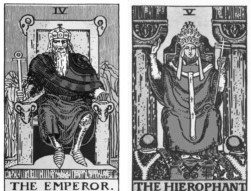

This article attempts to establish a sociology of the occult in general, and a sociology of the Western tarot in particular. The tarot is a deck of 78 cards invented in Italy in the fifteenth century. From humble beginnings as a device for gaming or gambling, the tarot became invested with occult, mystical, divine, spiritual, and even psychological significance. This investing became part of a larger strategy of discipline and indoctrination to ease the transition from pre- industrial structures of power and authority to industrial and bureaucratic struc- tures. That tarot, associated as it was with the emergence of elite Freemasonry, helped provide new ideologies of power and ways of existing within new tightly structured, bureaucratic organizations. Keywords: Tarot, freemasonry, discipline and control, ideology, occult, religion, halo/sharp.
Academics have long displayed an interest in psychical research, para- psychology, occult practices, and other phenomenon at the bound- & Pinch 1982; Truzzi 1974a, 1974b; Zaretsky aries of science (Collins& Leone 1974; Robbins & Anthony 1979). This multidisciplinary inter- est is traceable even to the founders of specific disciplines, although we might be surprised to find that thinkers like Freud (Devereux 1953), San- dor Ferenczi (Gyimesi 2012), William James (Sech, de Freitas Araujo & Moreira-Almedia, 2013) and other disciplinary luminaries took ser- iously the investigation of ‘boundary phenomenon.’ Sociologists have also expressed some interest in boundary phenomenon, the occult, se- cret societies, and such, but it has been far from all consuming. Simmel (2006) attempted to establish a sociology of secret societies and Tiryak- ian (1972) attempts to move us ‘toward a sociology of esoteric culture.’ Some work has been done in the Sociology of Science (Collins & Pinch 1982), and Hess (2007) has examined spiritism in some detail, but by and large sociologists have been silent, both empirically and theoretic- ally, on issues of the occult. This lack of sociological interest and almost dismissive orientation can perhaps be traced to the dominant assumption that secularization and scientific rationality would eventually kill such practices outright (Lund- skow 2008). It could also be partly due to their disenchantment with natural forces (Stone 2006), partly to the Durkhemian view of religion as a basic expression of the underlying social order (Durkheim 1915), partly to an anti-occult narrative that dismisses such interest as ‘heresy’ or ‘superstition’ (Hanegraaff 2005; Versluis 2007), and partly to Marx- ian skepticism of religion and spirituality. As a result, sociology has paid little research attention to boundary subjects like, for example, the tarot. The tarot is a deck of cards used for occult and mystical practice with a history of socio-political intrigue dating back to the fifteenth century (Dummett 1980), but which hardly registers on the sociological radar at all. There is some interest in a scholarly study of tarot outside of sociol- ogy, but even there the ‘paucity of material’ requires a multidisciplinary approach (Farley 2009, 5) Farley (2009, 1) attributes the lack of interest in the tarot to its association with “shoddy soothsayers and confidence tricksters,” and that is certainly part of it. Whatever the reason, the lack of sociological interest in the tarot represents a significant theoretical and empirical lacuna because, as this paper will attempt to demonstrate, there are reasons to believe that the tarot has far more sociological significance than first attributed to it. In this paper we see that the Western tarot be- came a weapon used in an esoteric (i.e., secret) class war by ruling elites to regain the power they lost as Church authority, and elite authority in general, were dismantled during the eighteenth and nineteenth centuries as a result of the English, French, and scientific revolutions.
The characteristics of a tarot deck are peculiar. A tarot deck is a set of cards in two parts (Dummett 1980) — a set of fifty-six minor cards, minor arcana, or suit cards, and a set of 22 additional ‘major’ cards. In the ‘minor’ part of the deck there are four suits (Swords, Batons, Cups, and Coins), each of which contains the cards ace through ten as well as a King, Queen, Knight, and Jack. The major cards contain a Fool card, traditionally labeled 0, and twenty-one other major arcana or trump cards, numbered from I to XXI.
Historically, the trump cards were:
| I |
The Mountebank |
VIII |
Justice |
XV |
The Devil |
|---|---|---|---|---|---|
| II |
The Popess |
IX |
The Hermit |
XVI |
The Tower |
| III |
The Empress |
X |
The Wheel of Fortune |
XVII |
The Star |
| IV |
The Emperor |
XI |
Fortitude |
XVIII |
The Moon |
| V |
The Pope |
XII |
The Hanged Man |
XIX |
The Sun |
| VI |
Love |
XIII |
Death |
XX |
Judgement |
| VII |
The Chariot |
XIV |
Temperance |
XXI |
The World |
According to Dummet (1980, 7), it is the presence of the twenty-two ‘triumphs’ that always “distinguishes the tarot pack from every other kind of playing-card pack.” In a tarot deck, the minor arcana may or may not be painted with images; however, the major arcana are almost always illustrated with fanciful, mythological, spiritual, and cultural imagery.
When the Tarot first came into existence the deck was little more than a picture book, a system for gaming, possibly a device for gambling (Dummett 1980) and held no mystical, magical, or divinatory signifi- cance (Farley 2009). The tarot did, arguably, have allegorical signifi- cance and Farley (2009) provides a convincing argument that the tarot, originating within the cultural milieu of the Egyptian Mamlūk caste, was reinvented as an allegory for the life of the Viscontis, rulers of Milan, but beyond that there is no evidence (despite protestations of authors like Place (2005) who erroneously assert the tarot’s mystical credentials based on its association with the mystical secular art of the Renaissance), to suggest it was anything other than a simple game of cards. According to Farley (2009, 3), “It began its life as a game with no purpose beyond providing mental stimulation. It contained no esoteric wisdom, could provide no spiritual advice and gave no clue as to how to conduct one’s life.” These days, however, the tarot has become much more. At its most sinister, the tarot is an indicator of, and perhaps gateway to, satanic wor- ship (Rudin 1990). Some traditional Christians, in particular those of an evangelical bent, have a powerful belief that the tarot is a book of the devil. This belief is so powerful that even to mention the word ‘tarot’ causes a vis- ceral, fear-based reaction (Anon 2012). However, the tarot is not primar- ily seen in this way. Much more common is a belief that the tarot was designed for, and can be used as, a tool for cartomancy. In the early days of tarot mysticism it was thought that the tarot could provide a gate- way or a channel that would facilitate communion with jinn, angels, and other exalted heavenly hosts. More recently, the superstition has been tempered, but the belief in gateways and channels remains, and in some surprising places. These days, the most respectable way to present the art of divination would be as an attempt to explain the world where science seems unable to work (Maitre & Becker 1966), as a tool for developing the ‘inner eye’ (Noddings & Shore 1984), or perhaps a way to tap into the knowledge contained in the unconscious (Bala 2008). The tarot also holds a respected place in Jungian psychology as a way to connect with “that level of nature that lies behind stars and cards and psyche and is expressed in all of them” (Spiegelman 1998, 93). For Spiegelman “that level of nature” is the level of ‘archetypes.’ According to Spiegelman ‘archetypes’ represent grand cosmic templates and patterns all of which can, when suitably connected with, yield prescient and prophetic con- tent.However, as noted above, while the twenty-two trump cards that dis- tinguish a tarot deck from a ‘normal’ pack may have been developed with allegory in mind (Farley 2009; Pratesi 1989), there are no estab- lished references to the use of the tarot as a fortune-telling tool until the middle of the eighteenth century (Dummett 1980). The first association of the tarot with mystical or divinatory proclivities emerge specifically with the work of Antoine Court de Gébelin, M[onsieur] le C[omte] de M. and Etteilla (whose real name was Jean-Baptiste Alliette). Both can be traced to the publication, in 1781, of Court de Gébelin’s nine-volume Le Monde primitif, more precisely, to two seminal essays, one by Court de Gébelin, and the other by M. le C. de M. (Dummett 1980). Prior to this publication, the tarot was seen as nothing more than a vehicle for a game of cards, and an outlet for the vice of gambling. Afterward, however, the tarot gradually became a divinatory masterpiece and key to all life’s mysteries. Before we address the question of why the tarot changed, and what is significant about the dates, it will be worthwhile to highlight just what the tarot has become since Court de Gébelin first set the ball rolling
It is surprising enough that the tarot, a mere pack of cards with pretty pictures, would become a significant tool in the repository of the Jungian therapist, but even more surprising is the spiritual import that has been placed on this not-really-so-ancient pack of cards. For many, the tarot has become a hermetic or spiritual tool. ‘Hermetic,’ in this instance, is to be understood both as “a tool of occult science and magic,” and as “hav- ing a lineage traceable to Hermes Trismegistus.” Thrice-great Hermes was the mythological author of a corpus of works teaching Hermeti- cism, a belief that the world can be influenced through contact with and exploitation of ‘heavenly forces’ — magic in other words. In this view, the tarot is a book of ‘special’ symbols, a “perfectly simple philosophical machine” that contains “the whole science” and “that astonishes by the depth of its results” (Levi 2002, 85). According to this line of thought, the tarot is not an ‘open’ book; rather, it is a secret book, a hidden book, one open only to those who undergo a “special training of the mind” (Ouspensky 1976, 2). With the tarot, it becomes possible to mediate be- tween humanity and the Godhead, between god/spirit/consciousness and profane human existence (Semetsky 2011a). In the Hermetic tradition, tarot is variously a teaching tool used to develop special skills, a “com- plete code of Hermetic symbolism” (Ouspensky 1976, 2), a “summary of Hermetic Sciences” (Ouspensky 1976, 6), and a way of revealing the “interface between human kind and the cosmos” (Jorgensen & Jorgensen 1982, 381). Occult reality, then, is “idealistic” or spirit like in fundamental character. The material world (that world available to sensory experience) is held to be an illusion; matter, in other words, is dominated by spirit. The tarot symbolically represents material phenomena (heavenly bodies, political, family, economic relations) in terms of nonmaterial principles and forces thought to constitute the True nature of the universe. Though hidden and concealed, these supernatural forces are accessible to human beings by way of intuitive, mystical, or psychic insights. (Jorgensson & Jorgensen 1982, 380) As Jayanti (2004, ix) notes, “... the images in the true1 tarot are liberating in their effects they present the reality behind appearance which is the search of all aspirants... The tarot is the easiest gateway to the Great Mys- teries of Life.” In sum, in the magical mystery traditions of the Western world, the tarot is an esoteric tool of mysticism, a supreme instrument of divination, a deck of secret knowledge, an ancient Egyptian fountain of wisdom, a bible of bibles, a bible of humanity containing wisdom from the time the world was born, a book of Thoth, a book of Adam, a revelation of ancient civilizations, and the whole cosmic/cosmological/ theological and philosophical ball of wax rolled up into one convenient package of cheaply illustrated paper cards (see Dummett 1980; 2007).
We will return to analysis of ‘hermetic mysteries’ of tarot shortly. It is worth noting that out of the view that tarot is some magical, spiritual tool have arisen other schools of thought. Noteworthy is the Jungian school of psychology where you will find the same hyperbolic discourse on the powerful tarot. Here the tarot is a tool for praxis therapy, a thing to facili- tate the process of ‘individuation’ (Gad 1994), an instrument capable of “heal[ing the] human psyche and lift[ing the] human spirit” (Semetsky 2010b, 59), and offering transformation and transcendence (Bala 2010). Its efficacy is established by linking it to psychological theories of ‘ab- jection’ and archetypal psychology (Semetsky 2000). We can use indi- vidual archetypes to facilitate self-journey and awareness, reading deep archetypal significance from them (Nichols 1974). In certain branches of psychology, the tarot is even more than mere individuation. Its utility is extended into the world of semiotics and child psychology (Jayanti 2004). Some see tarot as a tool to teach children the “three I’s” of “in- formal education”: intuition, insight, imagination (Semetsky 2011a), or even as a powerful therapeutic tool, a reflection of the four gateways of childhood, bursting with deep psychological meaning, a divine reflec- tions of deep psychology so powerful that it might help heal the inner child and rework toxic socialization. As Jayanti (2004, 8) notes: To conclude, [because] so many of us were brought up in dysfunctional families...a great need to re-habituate or re-parent...ourselves has arisen. Many types of work geared to reclaim and heal the Inner Child have be- come available to answer this need. The ancient Qabalistic tarot and Tree of Life have offered the tools with which to do this type of transforma- tional work. According to Semetsky (2011a, 252) “The tarot images that are laid down in a particular pattern are thereby ‘selected’ by soul, by the uncon- scious, and cannot be considered random.” In this way, the tarot becomes a kind of mystical Rorschach, allowing an individual or therapist access to deep levels of meaning in the collective memory pool for the purpos- es of spiritual work, meaning, and mythological revelation (Semetsky 2009; 2011b). “When symbolically represented in Tarot images, the tran- scendental realm of the psyche is being brought, so to speak, down to earth by virtue of its embodiment in physical reality.” (Semetsky 2010a, 110, emphasis in the original). In line with this line of thinking Nichol- son (2003) uses the tarot to illustrate deep wisdom of feminist theology, and Santarcangeli (1979, 33) informs us of the deep cosmic ‘wisdom’ of the fool. If you believe the psychologists, pregnant with meaning, the tarot is a teacher of lessons and a font of cosmic/genetic/racial wisdom and memory.
The first clues to unraveling the ‘mystery’ come from the temporal loca- tion of its emergence as a divinatory tool, specifically, during the French Revolution. At that time, traditional power structures were crumbling and New World industrial capitalism was emerging. The popular mind sees this period as one of general emancipation, but as any sociologist will know, the history of the French, English and Dutch revolutions and the emergence of industrial capitalism is not the history of the end of class oppression. Instead, it is the history of the replacement (more or less) of one ruling class with another. During the transition, feudal re- lations of power, feudal ideological institutions, and feudal systems of control were replaced with industrial ones. The story of this transformation is understood, at least in general terms, as a disciplinary revolution. Between the eighteenth century and middle of the nineteenth, Western institutions changed dramatically (Kieser 1998) and new forms of behavior were required if industrial capitalism was to survive and thrive (Weber 2003). It essentially came down to the creation of new kinds of authority, and new power relations, as economic, productive, and social crises brought the old feudal order to its knees (Dobb 1972). It is, in short, about the creation of modern corporate/ bureaucratic control structures, fitting workers and middle management with the executive branches, and creating the well-oiled capitalist machine we have today (Barnard 1968). In the context of the disintegration of traditional organizations and traditional authority struc- tures, the issue was one of authority, command, control, and legitimacy (Weber 2003), especially in emerging industrial production. Modern corporations and bureaucracies have top-down executive control and established disciplinary procedures, but these things would have been absent at the cusp of the revolution. At that time, there would have been an obvious need to create new organizational structures and civilizing influences (Elias 1994), and of course, that is what happened. It is a com- mon story in sociology with the rise of the Protestant ethic (Weber 1987; 2003) and the dispersion of ‘institutional strategies’ for maintaining col- lective discipline throughout Europe (Gorski 1993, 266). In the context of ‘institutional strategies’ for maintaining collective discipline, Freemasonry and other middle-class “men’s huts” (Jewkes, 2005, 47)3 can been analyzed sociologically. According to Jewkes (2005), freemasonry is part of a male bonding ritual, characterized by hierarchies and exclusions, and that reproduces and reaffirms patriarchy, unequal power relations, and ‘male’ hegemony. Jewkes’ comments are relevant here, not so much for the Masonic performance of patriarchy, but for the way the Masonic universe reinforces and, more importantly, re-creates power relations, not in a feudal way, but in a bourgeois one. When they were first introduced, Masonic lodges were safe places to explore, proselytize, and convert people to the new social order. “It was in the lodges and through them that the bourgeoisie acquired a so- cial form of its own. In imitating both its mystery won a place beside the ecclesiastical mysteries and the arcane politics of States” (Koselleck 1988, 72, quoted in Horn 2011, 111). According to Kieser (1998, 47), Freemasonry was part of the shift in control and disciplinary strategies from feudal organizations, such as guilds, which “encompassed” mem- bers “in total”) and organizations that required less complete forms of immersion (i.e. pre-modern bureaucracies). In this context, Freemasonry was an ideological and pedagogical control strategy, helping to facilitate not only required changes in behaviour, but also the development and acceptance of modern command and control structures. As Kieser notes: The shift from estates to organizations necessitated enormous changes in the individual’s behaviour. Today, organizational behaviour has become so common that we are no longer aware of the amount of learning about new behaviour that members of the early organizations had to manage. For example, in organizations, they had to accept a person as a superior for the simple reason that this person was appointed as a superior. The su- perior could be younger, less educated, of a lower social status, less skilled — none of this mattered; as a subordinate, one had to accept his or her orders. On the upper levels of an organization, the member also had to be able to make decisions according to the rules sine ira et studio (without ire and passion), even if, as an individual, he or she would have decided dif- ferently. In general, as a member of an organization, one has to do things for an organization according to plans, procedures, or orders that, as an individual, one would tend to reject. In the 18th century, very few people were able to exhibit a behaviour that was appropriate for organizations and even fewer were capable of designing organizations. (1998, 47) In the context of the disciplinary revolution, Gorski (1993) notes two important features of the new organizations: an ethic of social discipline and surveillance. Members of modern organizations enter into a disci- plinary community with all the standard features of modern control, in- cluding enclosure, partitioning, ranking, organizational rules, etc. (see, for example, Foucault 1975). Furthermore, the ethic of social discipline requires mutual (later technological) surveillance. Freemasonry was very popular in the late seventeenth and early eighteenth centuries, a time when feudal methods of control and discipline were dissipating and new forms were required. Freemasonry provided discourses of authority, a disciplinary ethic, and provisions for mutual surveillance and social discipline, all rooted in and inspired by Calvinism and ascetic Protest- ant ethics (Gorski 1993). Kieser (1998) provides a revealing translation of several masonic speeches of the era. Freemasons saw themselves as ‘impressive men,’ conscious of their role in the formation of new social orders, and actively involved in steering its emergence. Freemasons had a moral duty for mutual education in temperance, politeness, prudence, perseverance, and other characteristics suitable to a new and emerging bourgeois society. Freemasons were admonished to be active, to have a strong work ethic, and to engage themselves in useful labour, all very valuable advice for anyone seeking entrance into the power centres of the emerging middle classes. Lodges were thus organizations that enabled their members to de- velop precisely those skills they would need as capitalism developed. Lodges constructed the first hierarchies4 divorced from feudal tradition basing advancement not on ‘the dignity of birth,’ but on the acquisition of key organizational and moral skills, such as self-discipline, reliability, loyalty, and subservience to the command chain, and this was true even for nobles (Manheim 1979, cited in Kieser 1988). Nobles entered lodges as well, and they did so as a way to transition themselves from old power re- lationships into new ones. Lodges offered a way for old layers of nobility to mingle with emerging industrial elites (Kieser 1988). Similarly, Free- masonry offered the upper bourgeoisie fulfillment of its need for prestige and recognition. In this way, secret societies, as they initially emerged, helped to bridge the social gap (Kieser 1988). Perhaps most importantly, Freemasonry facilitated the development of a morality that would facili- tate business relationships (Schindler 1982, cited in Kieser 1988). In this regard, Freemasonry can be considered a brilliant and self-conscious strat- egy for lubricating the transition from and old to a new world order — it helped create new modes of discipline and authority, and new power struc- tures, all the while co-opting potential resistance (by incorporating feudal authority) and obscuring the intent and outcome of its operations. The ideological, political, and social functions of the Freemasons (and other secret groups) have long been established.5 The question now becomes, “What does all this have to do with the tarot?” The answer is, “Everything.” From almost the beginning, the tarot has been an essential part of ideological indoctrination in secret brotherhoods, and a tool useful for facilitating the mutual education of the emerging social elites. Indeed, new speculative lodges were barely open a day before tarot became in- corporated. The moment of creation of the ‘occult tarot,’ and the principle author responsible, are highly revealing indicators. As Dummett notes: The entire occultist tarot tradition stems from the work of Antoine Court de Gébelin (1719 - 1784), a Protestant pastor, Freemason, and savant Born in Geneva, he was the son of Antoine Court, the most prominent French Protestant pastor of his day, and lived in Switzerland until he was 40. (1980, 102, emphasis added) Court de Gébelin initiated the idea of the occult tarot. Following him, the idea of ‘the tarot as occult masterpiece’ was extended by Freemasons, clerics, and other members of the emerging elite (Dummett 1980). The ideological imposition reached a sort of culmination with the work of prominent Freemason, A.E.Waite in the early twentieth century, but even down to this day tarot decks are regularly linked to secret societies.6 For example, authors such as Jayanti (2004, v) reference well-known Free- masons like Paul Foster Case as teachers. And lest one doubt the inser- tion of tarot into ideologies of hierarchy and control, Jayanti unselfcon- sciously discusses major modern decks as derived from elite organiza- tions participating in the ‘spiritual hierarchies’ (read ‘elite hierarchies’) of this world: The true tarot decks that have been published by authentic Mystery Schools, such as the Order of the Golden Dawn of England with the Rider deck, and the Builders of the Adytum of the US with the Case deck, are true in that they most closely approximate the unpublished tarot of the In- ner School, the Spiritual Hierarchy of the world (Jayanti, 2004: ix). The question now becomes, why choose tarot for this purpose and why incorporate it as a tool of indoctrination when it was merely a card game at the time? The answer, although lost in the mists of time, likely revolves around (a) the allegorical meaning of the images, a meaning linked to the Italian courts of the fifteenth century, (b) their suitability as an imaginative device capable of absorbing additional meaning, and (c) their suitability for ideologically impregnated drama. As Dummett (1980) notes, the original tarot decks were painted for members of the royal elite. As Farley (2009) discovered, the images themselves were representative of the life and times of important noble families. Thus the images incorporated themes that any sociologist would recognize as representing elite life, elite priorities, elite ideology, and elite spiritu- ality.7 There is a Court Fool, for example, and a Court Juggler. The au- thority of the state and church are clearly represented in the Empress, Emperor, and Pope cards. There’s a Chariot carrying the king, a Hermit (a monk perhaps), an angel of Temperance, and the Justice of the royal courts. Death, a common fact of life, is represented, as is Love (and mar- riage). Even the Christian last Judgement, a cautionary tale if there ever was one, is there.
Figure One: The Emperor and Hierophant (Pope) from the Rider-Waite Deck
The presence of elite ideology and practice in the already existing tarot deck would likely have been attractive to the Protestant clerics and Free- masons who co-opted the deck. After all, they were demonstrably mem- bers of the elite already. More attractive perhaps would have been the opportunity to read in additional meaning. Images are worth a thousand words we are told, but what words those might be are often a matter of imagination and interpretation. As recognized by some Jungian psych- ologists (see, for example, Rosengarten 2000), tarot images (like any good images) are artistic devices that can carry significant additional meaning. It took only a few years before the originators of the occult tarot had impressed dogma, magic, and mysticism from the Western esoteric traditions upon the tarot.8 Soon tarot cards conveyed cabbalis- tic, astrological, alchemical, and gnostic import (Decker and Dummett 2002). The allegorical bed of the tarot provided a fertile ground within which to plant the seeds of a new, post-feudal ideology
For five centuries or more tarot cards have been used in Europe, ostensibly for games and fortune-telling, but really to preserve the essentials of a se- cret doctrine. They form a symbolic alphabet of the ancient wisdom, and to their influence upon the minds of a few enlightened thinkers we may trace the modern revival of interest in that wisdom. (Case 2012, 5)
The question remains, “What exactly is the ideology embedded in the tarot?” We might think that uncovering this ideology would be a ma- jor challenge, especially since Western esoteric traditions are, by and large, secret traditions, but it is not that hard, for several reasons. For one thing, and as contradictory as it might seem, modern esoteric traditions are by and large written traditions (Versluis 2007). Ideology is imprinted in words and images, and it is often very easy, if one has the right per- spective (the “eyes to see” as they say), or can make a simple intellec- tual connection, to read the ideology directly from the image or text. Consider the Wheel of Fortune card, which is typically said to indicate the ‘kingdom’ or, more directly, the world around us. It is an image of reality, often with karma invoked. It is the expression of spirit, a work- ing out of the true law of the universe, a perfect representation of divine providence, or as Paul Foster Case says, a representation of “spirit in self-expression”
The tenth trump, the Wheel of Fortune, is Malkuth, the Kingdom. As the parables of Jesus plainly show, that Kingdom is not a state of life after death; nor is it, except in a very limited sense, a social order. It is the method of Spirit in self-expression; and because cyclicity is characteristic of that method, the tarot symbolizes the Perfect Law as Buddha did, by a Wheel. (Case 2012, 32)
It is quite interesting that Case drops the word ‘social order’ into his description of the meaning of this card. What a social order, however limited, has to do with the self-expression of Spirit is unclear, but it is apparently related. Case of course doesn’t bring out the nature of the social order in his text. This is a “secret” tradition after all where the inner truths of the hearts of men are drawn out in the hidden spaces of the temple alcove. The meaning of the card, and the nature of the “social order,” is available however in the visual imagery of the card with clar- ity, precision, and dramatic oomph. Consider the Golden Dawn image below.
Figure Two: The Golden Dawn World Card
The social order that Case is referring to is quite plain to see in the card above. Nature below, the gods above, and the wheel of life’s cycles of (birth and rebirth) in between. This is an elite social order and this elite social order is embedded in Western esoteric traditions all the way back to Plato, as Versluis notes of his Republic, “The Republic also res- onates with the recurrent idea of creating a spiritual utopia governed by an enlightened elite, a concept found much later, for example, in the Rosicrucian movement of the seventeenth century” (Versluis 2007, 16). Looking at the card it is hard not to see the enlightened spiritual elite governing the unenlightened and primitive masses. The ideology or ‘message’ embedded in the card is something that should be familiar to any second year sociology student: the card represents a two-class social system, and a not very pretty one at that. The upper class is royal and regal, while the lower class is unevolved, ape-like, and clearly pas- sive. The Golden Dawn card is remarkable not only for the ‘hide in plain sight’ way that elite ideology is presented, but also for the remarkable way the ideology is accepted as part of a package of divine revelation, of spirit expressing itself in the Kingdom. Elites are justified to rule because they have access to the ‘light,’ they are ‘evolved,’ and so on. The rhet- orical turn (reinforced by a visual turn, crucial in pre-literate societies) represented here should be apparent, and a visceral reaction may even accompany our realization that the divine, magical, Egyptian, Vedic wis- dom represented in this card is nothing more than a prettied up version of Catholic doctrine concerning the divine right of kings. Social class, hierarchy, command, control, privilege, and the unequal distribution of power, so typical of the ‘class struggle’ of this world (Marx 1848), is writ large on this card.
Another reason that is it not hard to ‘read’ the ideology of tarot is because, at the beginning of the twentieth century, the ‘secrets’ of eso- teric elitism were fully exposed to the mass consciousness (Decker and Dummett 2002) and subsequently penetrated into, and become a part of, the ideological fabric of this planet. Members of the men’s huts of the time, most notably Crowley and other members the fraternal organiza- tion he founded, made it a point to expose the ‘secret teachings’ to the outside world. A scandal at the time, Crowley irked members of Her- metic Order of Golden Dawn when he self-consciously set himself, and other members of his very own secret club, as the revealers of all the secrets. Crowley created the journal The Equinox, and then subsequently published Golden Dawn secrets and rituals in his open esoteric journal.12 He sets the agenda in the opening editorial of the publication, though not without first casting standard aspersions on the ‘multitudes’ (i.e., lower classes) of the world.13
With the publication of this Review begins a completely new adventure in the history of mankind. Whatever knowledge may previously have been imputed to men, it has always been fenced in with conditions and restric- tions. The time has come to speak plainly, and so far as may be in the language of the multitude. . . But the Brothers of the A ∴ A ∴ make no mystery; They [sic] give you not only the Text, but the Comment; not only the Comment, but the Diction- ary, the Grammar, and the Alphabet. (Crowley 1909, 1)
The intent of this paper is not to expose in detail the underlying ideology of the tarot major arcana, that is the task of a subsequent paper entitled The Ideology of Tarot (Sosteric, in progress), but rather to demonstrate that such work is both needed and possible. In other words, this article has tried to establish the need for a sociology of the Western tarot spe- cifically, and a sociology of the occult more generally. This Sociology of Tarot includes a sociology of how those who practiced tarot used the decks in ways that related to changing relations of class, discipline, power, and ideology. It appears that tarot was invented as a deck of play- ing cards, reflecting the life and times of significant Italian families, but became implicated in the double revolutions that collapsed structures of feudal authority, and legitimated new systems of social authority and discipline. The tarot deck was a useful tool for this purpose because the imagery was already linked to elite practice (having been invented in the courts of Italy), already had suitable iconography (kings, queens, and popes), was plastic and could be ‘imprinted’ with additional symbolism, and eventually became used as an initiatory device in secret societies and new religious sects emerging at this time. Work to establish the oc- cult authority of the deck was accomplished by prominent Freemasons, clerics, and members of the transitioning elite. The net result was a deck of superb ideological brilliance and utility, capable not only of indoc- trinating members of secret organizations, but also of imprinting mass consciousness with elite ideology. Although one might initially feel that a sociology of the tarot would only be of historical interest, that is not the case. The movement of tarot ideology into the mass consciousness, as encouraged by Crowley and his brothers for example, has left an unchallenged (and potentially quite significant) ideological imprint. Coupled with the recent proliferation of superstition, ignorance, and irrationalities of modern society as noted by Bauer (2011), and the uncritical way tarot aficionados (even academic ones) take up the ideology (e.g. Place 2005), the social impact of tarot in contemporary society may be taken too lightly. Doering-Manteufell (2011) found a dramatic spread of superstitions that uses modern com- munication technologies as a means to proliferate occult (read ideologic- al) practice. This is particularly evidenced in the proliferation of tarot decks. Today literally hundreds of tarot decks are in print, all representing the author’s particular views, but almost all of them echoing iconic Ma- sonic imagery and interpretation (Farley 2009). More than ever, socio- logical analysis in the occult tarot specifically, or occult phenomenon more generally, seems warranted. Sociological investigation would include analysis of ideology and control that might explore links between the tarot and the ideological im- portance of religion (Weber 2003), or disciplinary control strategies iden- tified by Foucault (1975) and others. There are also dialogic questions about the rhetorical strategies used not only to obscure the true nature of elite ideology embedded in the tarot system, but also to lend occult and spiritual authority to the tarot (Fairclough 2001). These strategies have only been touched on in this paper, but other strategies are evident and need to be exposed.15 Finally, the psychology of the tarot, specifically its use in dramatic ritual and initiation pageantry, and its utility as a device of indoctrination, are also interesting questions worthy of sociological examination. It is also useful to note that the history of tarot and the occult are not just class histories, they are histories of patriarchy and racism. As noted earlier, sexism is imprinted on the very structure of men’s huts, and for all the mystical wisdom offered up, the sexism is prominent and often of- fensive, especially in dominant figures like Aleister Crowley [see for ex- ample the opening words of the Crowley editorial in the inaugural edition of Equinox (Crowley 1912)]. Racism also figures in the principal texts of theosophical movement [see Blavatsky 1888; Besant 1907 and 1911), and Besant & Leadbeater (1913)] where doctrines of spiritual progress, reincarnation, and karma are based on racial frameworks and derogatory characterizations of “non-Aryan” racial groups (Staudenmaier 2009, 52). Even contemporary Masons exclude women from consecrations of their lodges. In this context, it is important to point out that in the Masonic tarot, the Fool (the tarot ‘signature’ card representing the subject of the initiatory/evolutionary journey) is inevitably white, male, and young. Berger (1969) assumed that Western societies would experience decline of spiritual and religious belief, and increased secularization. This paper defends the need for a new sociology of tarot, occult, and ideology, and an open discussion of the significance and relevance of occult knowledge and practices. Note, however, that it is more than just social class, gender, ethnic, or ideological interest that is at stake here. There is a sociological question raised by all this: “Why do spiritual- ity, religion, and the occult continue to hold such traction?” The implicit and probably unspoken (except at closed faculty parties) assumption of those who follow Berger probably invokes stupidity, incredulity, and ir- rationality, but this is hardly an explanation at all. People are not stupid and they do not, in general, believe things for no reason (Sosteric, Under Review). Better causes need to be established. Elites seem to believe in the tarot because it has been constructed by their members to reflect (and help distribute) an ideology supportive of hierarchy, privilege, and control. Still others, like psychologists, have been critical of spiritual be- liefs since Freud’s (2012) dismissal of religion as an infantile delusion, yet some adopt the tarot as a fountain of mystical/archetypal wisdom in pretty much the same way as established by occult elites. There is also a very long history of very smart people being interested in religion, spirituality, and mystical phenomenon (Verselius 2007). William James, father of American psychology, took religion and mystical experience seriously not as an example of something else (e.g. as a class opiate, or as providing social solidarity, or as a sacred canopy, or as a stepping stone from our superstitious past into our rational future), but as some- thing worthy of direct and engaged investigation (James 1982). Are these people stupid, irrational, and reactionary as well? Or, moving out of the realm of scholarly inquiry, why does the tarot remain so popular, or why do occult beliefs in general enjoy ongoing popularity. Can it all be dis- missed as naivety or elite ideology, or is there something else going on with tarot and religion not yet identified by sociologists? Hints may be offered here. In my sociology of religion class, for ex- ample, I explore the opportunistic nature of religion and spiritual beliefs. It turns out that when one examines the history of religion from a trans- disciplinary perspective (Lundskow 2008), religious and spiritual beliefs are, as I argue in the course, opportunistic. That is, it is not just tarot that becomes a virtual Rorschach suitable for ideological impregnation by whatever ‘special interest’ group happens to come along; rather, spiritu- ality and religion in general represent themselves as suitable for the pro- jection of a political, economic, and other special interests. Religion and spirituality come to express — always and wherever they are found — the social order, environmental realities, and even economic exigencies of a particular society at a particular time. Note however, that elites do not have unilateral control over the consciousness of the masses. Because religion is a resource, spirituality is a (arguably poorly) contested realm. It is the case that progressive or reactionary economic, political, and even gender interests may be inscribed into religious texts. Finally, a third reason for continued belief in the occult, spiritual, mystical, esoteric, mystery traditions may be because they represent real experiences, real revelation, and real gnosis that undermine normal taken-for-granted reality of our regular 3D world (Lynch 1977; Sosteric Under Review). This suggestion may strike readers as scientific heresy, as indeed it is. But the alternative is to dismiss the collective experiences of billions of people throughout history who have believed in mystical realms beyond the mundane, but also the individual experiences of schol- ars who have had some powerful mystical experiences (e.g. Castaneda 1985). I find myself in this group of scholars whose interests were per- haps not initially scholarly, but mystical, and whose mystical experiences “broke open the head” (Pinchbeck 2003) and led them to question the materialist foundation of science. Such experiences are of deep scholarly interest (Forman 1999), and fit very well into the gnostic experiences reported by Western mystics down the ages (Versluis 2002). Just as many other scholars use experience to develop scholarly insight, my experiences with tarot, mysticism, and gnostic traditions, have lead me to new sociological understandings. This raises scholarly questions, none of which can be served by out-of-hand, anti-scholarly dismissal. Western mystery schools, occult traditions, even established exoteric institutions like the Roman Catholic Church, all justify their positions, their tools, their bibles, their tarot books, by ascribing them to real mystical, magical, experiences. Christian are told to believe in the bible because it is the word of God, expressed through the mystical rev- elation of the prophets. Buddhists follow Buddhists tracts because they represent the mystical revelation of Buddha. Freemasons and Protestant clerics offer the tarot as the “bible of bibles” and support its authority in the same way, with claims for its antiquity, and linkages to the mystical experiences of authoritative personages (e.g. Hermes Trismegistus, the Egyptian god Thoth, etc.). This is nothing new. James (1982) said that all religions derive from somebody’s mystical experiences. The point in this paper is simply that gnostic traditions, the words of the mystics, occult ‘wisdom’ traditions, ‘mystical tools’ like the tarot, deserve serious and critical inquiry and analysis as such, and there is good reason to apply sociological analysis here. People who have mystical experiences often impress upon them their social class, gender, ethnic, political, and eco- nomic biases. Nowhere do we find ‘pure’ gnostic truth. Everywhere we find opportunistic imprints on spiritual ‘revelation.’ The problem is, if we dismiss spirituality and religion as nothing more than ideology, as salve against existential crises, or as infantile fantasy, not only do we miss an arguably valid area of inquiry (spirituality and gnosis), we also leave a spiritual vacuum, an absence of sociologically sophisticated understand- ing, that has profound global consequences. As Butler (2006) notes, the Christian Right has been able to gain ascendency in global politics and culture precisely because the Left has abdicated responsibility for providing such meaning. We sociologists have seen the Wizard of Oz, recognized him as a charlatan, and walked away. We have posted signs on the wall saying caveat emptor, but nobody seems to be reading the signs. Why do people continue to genuflect before the Wizard? There is a powerful need operating, and somebody always seems willing to fill it. The problem is that the people who move in, often do so without the best intentions (they have political, economic, gender and racial agendas), or without a sufficient degree of sociological, psychological, physical, chemical, even historical sophistication. The result is active imposition of ideology in the first case, or naïve adoption and unwitting propagation of ideology in the second. I would suggest a grass roots, sociologically sophisticated, spirituality, needs to be offered.
The author would like to thank Dr. Mike Gismondi and the anonymous reviewers for their helpful comments on earlier drafts of this article.
1. Not the “fake” Tarot, but the “true” tarot. Ever since the Freemasons took over tarot imagery there have been attempts to “manifest” the “true” tarot. Commentators like Crowley and Waite, and all those before, approach the tarot as if it is a puzzle in need of solution, or a cosmic gestalt in need of expression. For all these people there is an underlying truth that needs reveal- ing. Thus each approach is an attempt to uncover the true meanings of the cards. Truth can be located in mystical gnosis (as the Freemasons attempt to do) or archetypal revelation (as Jungian therapists to do), but either way there is an attempt to find the “true” tarot. Of course, the argument of this paper is essentially there is no “true” tarot. There may be spiritual and gnostic truths to discover in this world, but these truths are not inherent in the tarot. The tarot is a human construction and thus the question is not whether we can discover the “true” tarot, but are we satisfied with the thing that we have constructed. Personally I am not satisfied with the masonic Tarot and have been working to see something new, something more progressive, constructed in its place (see comments in the conclusion of this paper).